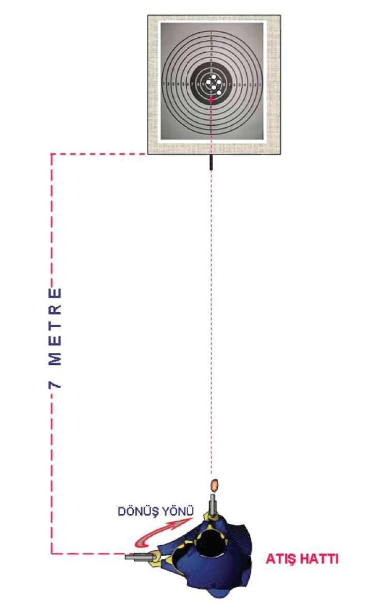
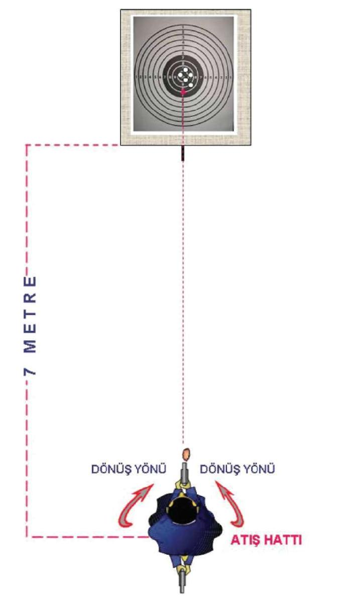

Özellikle öne doğru atış tekniği, hızlı atış tekniklerinin temelini oluşturur Bu teknikle hızlı hedef algılamayı, hedefe konsantre olmayı, hedefin karşısındaki duruş pozisyonunu ayarlamayı, hedefe çift gözle hızlı nişan oluşturmayı ve atış esnasında bilek ile kolları kilitleme pozisyonlarını öğrenir Ayrıca değişik yönlerden çıkabilecek hedeflere karşı, vücuda ani dönüş refleksleri ve bu yönlere atış yapabilme kabiliyeti kazandırır 51
Şekil --4.a) Dururken Öne Doğru Atış İstasyonu (Yarı Otomatik Tabanca) 52

BÖLÜM
İLERİ SEVİYE ATIŞ TEKNİKLERİ
Şekil --4.b) Dururken Sağa Doğru Atış İstasyonu (Yarı Otomatik Tabanca) 53
Şekil-4.c) Dururken Sola Doğru Atış İstasyonu (Yarı Otomatik Tabanca) 54

BÖLÜM
İLERİ SEVİYE ATIŞ TEKNİKLERİ
Şekil-4.d) Dururken Geriye Doğru Atış İstasyonu (Yarı Otomatik Tabanca) 55
1.4. YARI OTOMATİK TABANCADA ŞARJÖR DEĞİŞTİRME
VE ÇÖKEREK-AYAKTA ATIŞ TEKNİĞİ
Şarjör değiştirmeden önce tabanca hedefle göz arasında, kol dirsekten bükülerek namlu yukarıyı göstermek şartıyla ters “ L” pozisyonu aldırılır. Tabancayı kavrayan elin başparmağıyla şarjör çıkarma mandalına basılırken, öteki elle şarjör çıkartılıp atılır. Ay n ı elle yedekte bulunan şarjör çıkartılıp tabancayı kavrayan elin serçe parmağının yardımıyla çıt sesi gelinceye kadar tabancaya takılır. Tabancanın üst kapak indirme mandalına basılarak tabanca aktif duruma getirilir.
Bu esnada gözler, tabancanın ters “L” olan kısmından hedefi sürekli izler.
Bu teknik sütre arkasında aynen uygulanabileceği gibi sütrenin olmadığı bir alanda hızlı şekilde hedef küçültülerek, bir veya iki adım sağa ve sola sıçrayarak, tabancanın kullanıldığı el tarafındaki ayağın topuğuna oturularak diğer ayağı öne kırıp çökme pozisyonunda uygulanmalıdır.
Uzun mesafe atışlarında, ayak tam kırılarak üzerine rahat bir oturma pozisyonu sağlanır. Şarjör değiştirme işlemi tamamlandıktan sonra, önde kırılan ayağın üstüne pasif kolun dirseği ile destek yapılarak atış yapılır. Bunlarla eş zamanlı göğüs ve baş hedefe dik tutularak pozisyon alınır. (Bakınız Resim-6.a, 6.b, 6.c, 6.d) 1. Hareket
2. Hareket